5장에서 세운 Plan을 고객이 직접 눌러 볼 수 있는 프로토타입으로 만들어 링크로 엽니다. 고객들은 「Robo Architect - 피드백」 창에서 의견을 나누고, 화면을 바꿔 서로 보여 주고, 좋아요로 합의해 모두의 새 버전을 만듭니다. 누가 어디를 바꿨는지는 화면 위의 메모로 확인할 수 있습니다.
다음 설치본부터 포함됩니다
이 장의 기능은 설치본 0.1.1에는 없습니다. 지금은 소스 브랜치 feat/mvp-preview로 실행해야 합니다.
무엇을 하고 왜 하나#
5장에서 PRO-001(가게 메뉴 등록)의 Plan을 세웠습니다. 다음 장에서 바로 구현해도 되지만, 스펙 문서만 보여 주면 고객은 「실제로 써 봐야 알겠다」고 말합니다. 구현한 뒤에 의견을 받으면 수정 비용이 큽니다. 구현하기 전에 눌러 볼 수 있는 화면을 보여 주면 코드를 짜기 전에 의견을 모을 수 있습니다.
이 프로토타입은 미리 보기입니다. 데이터베이스나 서버 코드 없이 HTML 문서 하나로 실행되고, 예시 데이터는 메모리에만 있습니다. 그래서 고객의 의견이 곧바로 그 문서에 반영됩니다.
고객이 여럿이면 서로의 생각을 보며 다듬는 편이 빠릅니다. 각자 따로 고치면 서로 어떤 안을 냈는지 모른 채 설계자가 풀어야 할 충돌만 쌓입니다. 그래서 오른쪽에는 모두가 함께 쓰는 피드백 창이 있습니다. 누군가 화면을 바꾸면 그 화면이 피드백 창에 올라오고, 다른 사람은 그 화면을 열어 보고 이어서 고칩니다.
| 어디에 | 무엇이 |
|---|---|
| 피드백 창 (앱의 파일) | 모두의 말 · 댓글 · 좋아요, 공유한 화면과 그 diff, 합의 기록 |
| 앱 (파일) | 모두의 기준 버전(v1, v2 …) |
| 고객의 브라우저 | 「나만 보기」로 바꾼 화면, 내 이름, 피드백 창 배치 |
| 그래프 DB | 없음. 합의 스펙을 플랜에 넘길 때만 프로포절에 기록 |
따라 하기 1 — MVP 만들기#
5장에서 Plan을 세운 PRO-001을 사용합니다.
- 프로포절의 Plan 탭 아래쪽에서 MVP 만들기를 누릅니다.
- MVP 탭으로 이동하면 고객 링크가 브라우저에 바로 열립니다. 이름에
김사장을 입력하면 「미리 보기를 만들고 있습니다」라는 안내가 보입니다. 이 실습에서는 1분쯤 걸렸습니다. - 완성되면 프로토타입이 자동으로 뜹니다. 왼쪽에는 프로토타입이, 오른쪽에는 로고와 함께 Robo Architect - 피드백 창이 있습니다. 사장님 메뉴 관리 화면에서 품절 표시나 가격 수정을 눌러 보세요. 실제로 동작합니다.
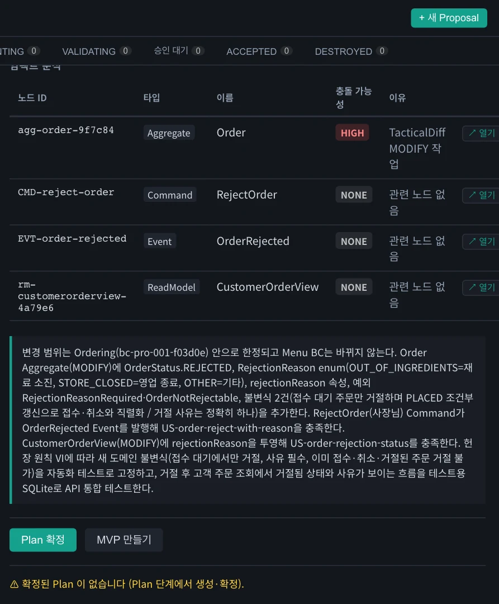
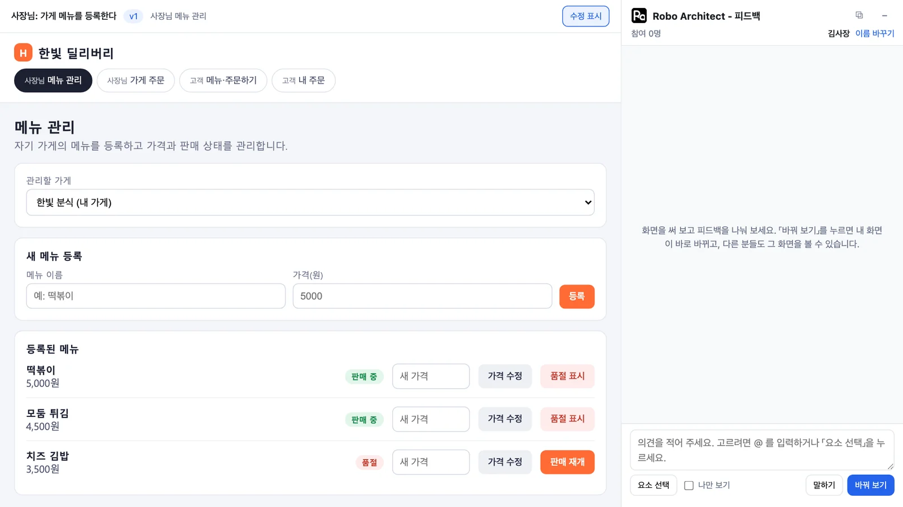
프로토타입은 만들 때마다 조금씩 다릅니다. 메뉴 등록 칸이 별도 화면에 있을 수도 있습니다. 아래 단계는 화면 이름과 단추 이름을 보고 따라 하면 됩니다.
따라 하기 2 — 골라서 바꿔 보기#
- 요소 선택을 누르고 새 메뉴 등록 칸을 누릅니다. 입력칸 위에
@메뉴 등록 폼같은 멘션이 붙습니다. 입력칸에@와 이름 일부를 써서 골라도 됩니다. - 「메뉴 분류(식사·사이드·음료)를 고르는 칸을 넣고, 지금 있는 메뉴에도 분류를 붙여 주세요.」라고 쓰고 바꿔 보기를 누릅니다.
- 내 화면의 등록 칸에 분류가 생기고, 등록된 메뉴마다 「식사」「사이드」 표시가 붙습니다. 이 실습에서는 26초가 걸렸습니다.
- 피드백 창에 「화면을 바꿨습니다」 카드가 올라옵니다. 코드 변경과 스펙 변경을 펼치면 diff가 보입니다.
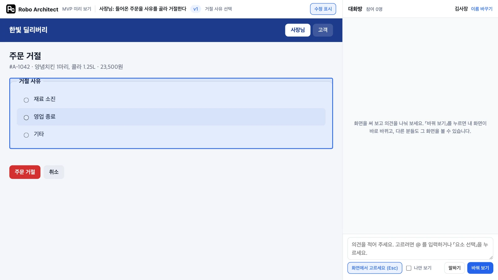
바뀐 등록 칸에는 점선 테두리와 「김사장 · 메뉴 분류(식사·사이드·음료)를 고르는 칸…」 메모가 붙습니다. 누가 어디를 바꿨는지 화면에서 바로 확인할 수 있습니다.
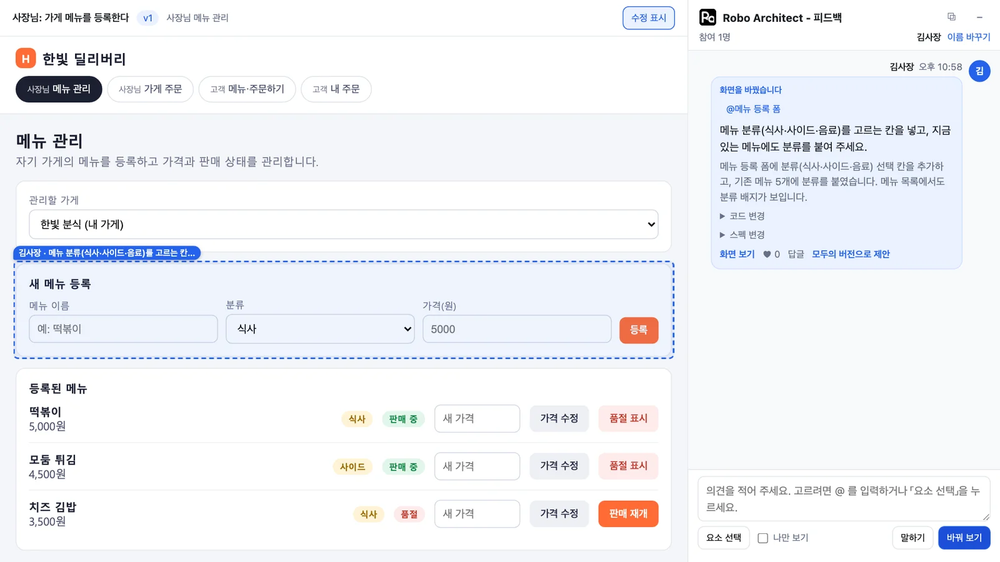
말하기와 바꿔 보기
말하기는 화면을 바꾸지 않고 피드백 창에 글만 올립니다. 모델을 호출하지 않으므로 글이 바로 올라갑니다. 바꿔 보기는 의견에 따라 화면을 바꿉니다. 「이 화면은 직원도 쓸 수 있나요?」처럼 물으면 화면은 그대로 유지되고, AI 답변이 피드백 창에 남습니다.
따라 하기 3 — 다른 사람이 들어오기#
- 다른 브라우저(또는 사생활 보호 창)에서 같은 링크를 엽니다. 이름에
이매니저를 입력합니다. - 피드백 창에 먼저 들어온 사람의 기록이 보입니다. 내 화면은 원래 상태 그대로이며 분류 칸이 없습니다.
- 카드의 화면 보기를 누르면 왼쪽에 김사장의 화면이 메모와 함께 뜹니다. 위쪽에 「김사장의 화면을 보고 있습니다」가 보입니다. 내 화면으로를 누르면 내 화면으로 돌아옵니다.
- 카드의 ♥를 누르고, 답글로 「좋아요. 메뉴 관리 목록도 분류별로 묶이면 찾기 쉽겠어요.」라고 답합니다.
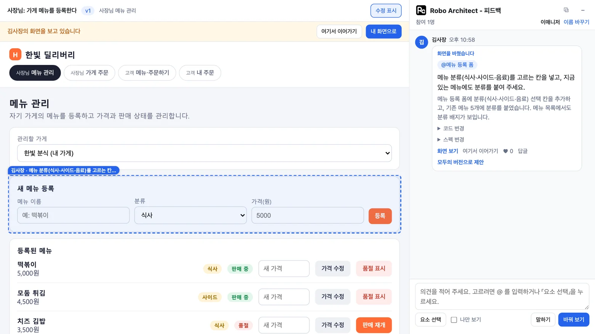
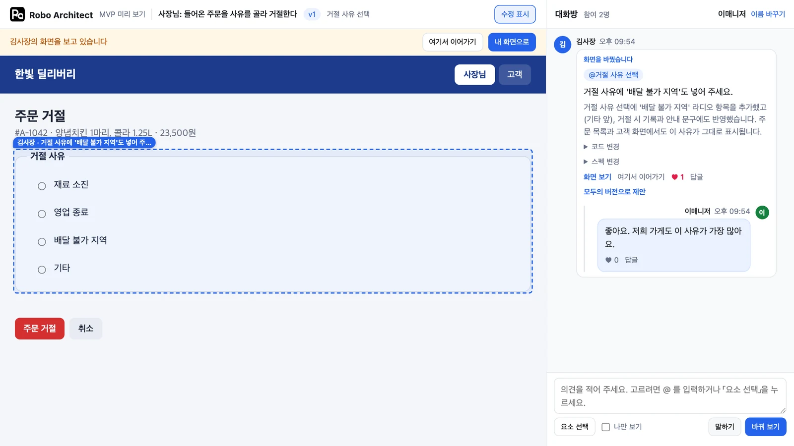
따라 하기 4 — 이어서 고치기#
- 김사장의 화면을 보면서 여기서 이어가기를 누릅니다. 이제 그 화면이 내 화면이 됩니다.
- 「등록된 메뉴 목록을 분류(식사·사이드·음료)별로 묶어서 보여 주세요.」라고 쓰고 바꿔 보기를 누릅니다. 이 실습에서는 6초가 걸렸습니다.
- 등록된 메뉴가 「식사 (2개)」「사이드 (1개)」로 묶입니다. 화면에는 두 사람의 메모가 함께 보입니다. 김사장이 바꾼 등록 칸과 이매니저가 바꾼 메뉴 목록에 붙은 메모입니다.
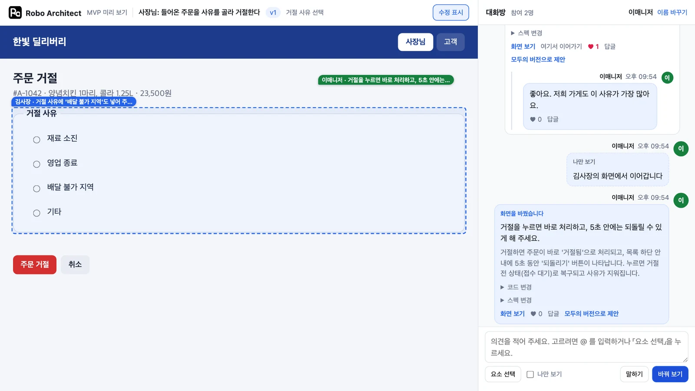
따라 하기 5 — 합의하기#
- 세 번째 창으로
박직원이 들어와 「분류가 있으면 바쁠 때 메뉴 찾기가 훨씬 빠르겠어요.」라고 말합니다. - 이매니저가 자기 카드에서 모두의 버전으로 제안을 누릅니다. 카드에 「합의 제안 · 좋아요 1/2」가 뜹니다. 제안한 사람의 좋아요가 첫 표입니다.
- 박직원이 그 카드의 ♥를 누릅니다. 참여자 과반(최소 2명)의 좋아요가 모이면 합의됩니다. 카드에 「합의됨 · v2」가, 피드백 창에 「합의되어 모두의 새 버전이 되었습니다(v2)」가 뜹니다.
- 같은 링크를 연 사람마다 새 버전 안내가 뜹니다. 새 버전으로 보기를 눌러야 새 버전으로 이동합니다. 이전 대화는 그대로 남습니다.
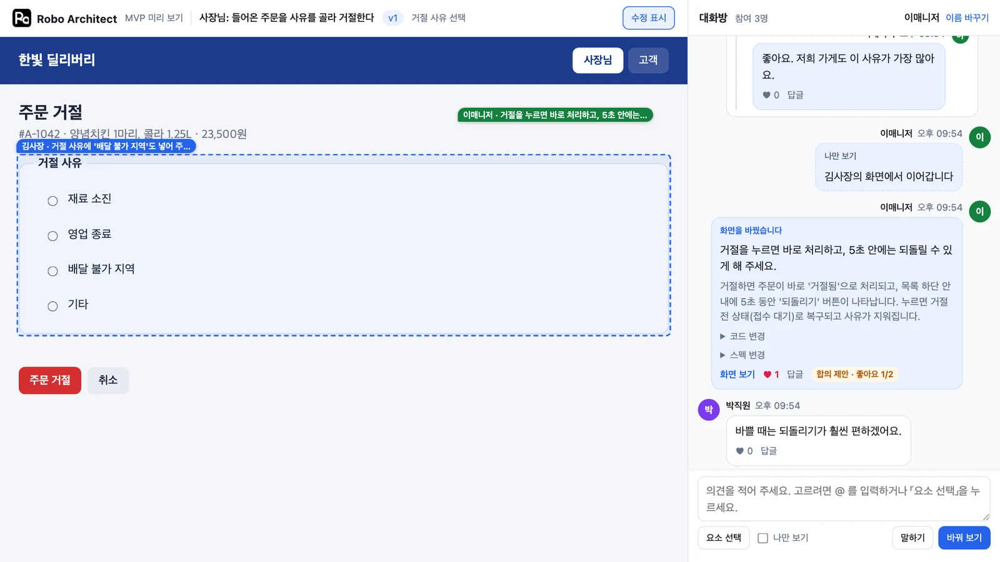
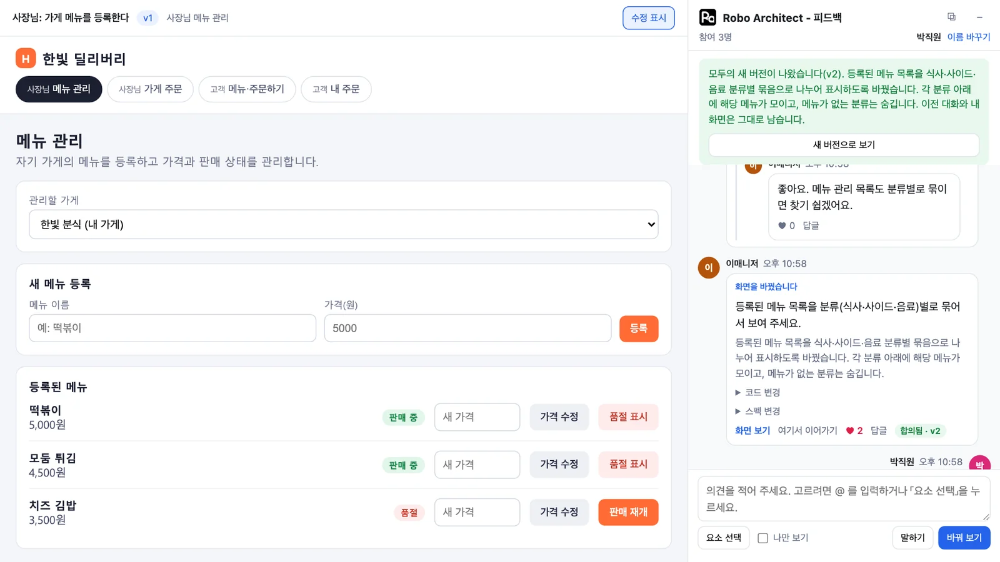
혼자서는 합의할 수 없습니다. 마지막 합의 이후 말하거나 좋아요를 누른 사람만 참여자로 셉니다. 그래서 중간에 떠난 사람이 다음 합의를 막지 않습니다.
따라 하기 6 — 누가 어디를 바꿨나#
v2를 열면 그 버전을 만든 사람들의 메모가 붙어 있습니다. 메뉴 목록에는 이매니저의 메모가, 등록 칸에는 김사장의 메모가 있습니다.
- 메모를 누르면 피드백 창의 해당 변경 글로 이동하고, 그 글이 잠깐 빛납니다.
- 위쪽의 수정 표시를 누르면 메모가 꺼집니다. 새로 고쳐도 꺼진 상태가 유지됩니다. 다시 누르면 켜집니다.

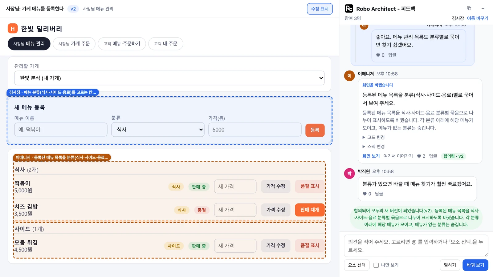
나만 보기
입력칸 아래의 나만 보기를 켜고 화면을 바꾸면 그 화면은 내 브라우저에만 남고 피드백 창에 올라가지 않습니다. 나중에 카드의 공유하기로 올릴 수 있습니다.
따라 하기 7 — 피드백 창 접기 · 띄우기#
프로토타입을 넓게 보고 싶을 때는 피드백 창을 치워 둡니다.
- 피드백 창 상단의 −(피드백 접기)를 누릅니다. 창이 사라지고 프로토타입이 화면 폭만큼 넓어지며, 오른쪽 아래에 로고 단추만 남습니다.
- 그사이 박직원이 「저는 v2로 충분해요.」라고 쓰면 단추에 새 글 수 1이 뜹니다. 단추를 누르면 피드백 창이 다시 열리고 그 글이 보입니다. 메모를 눌러도 창이 열립니다.
- 상단의 ⧉(창으로 띄우기)를 누르면 피드백 창이 프로토타입 위에 뜹니다. 창 상단을 끌어 위치를 옮기고, 오른쪽 아래 모서리를 끌어 크기를 바꿉니다. 다시 누르면 오른쪽에 붙습니다.
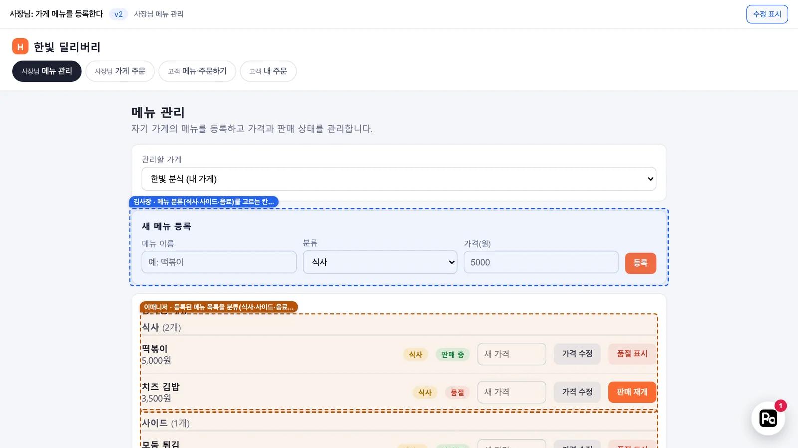
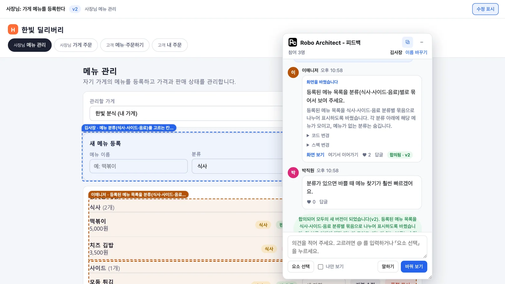
선택한 배치와 창을 띄운 위치는 해당 브라우저에 저장됩니다. 새로 고쳐도 그대로입니다. 폭이 좁은 화면에서는 띄우기 단추가 보이지 않습니다.
따라 하기 8 — 설계자가 넘기기#
- 앱의 MVP 탭으로 돌아옵니다. 받은 의견에 의견이 사람별로 모여 있습니다. 자세히로 의견과 diff를, 이 사람 화면으로 그 사람이 마지막으로 공유한 화면을 봅니다.
- 필요하면 의견 취합을 누릅니다. 이 실습에서는 9초가 걸렸고, 의견이 「메뉴 분류 선택 및 기존 메뉴 분류 부여」「메뉴 목록을 분류별로 묶어 보기」「현재 버전(v2)으로 충분하다는 의견」으로 묶였습니다. 좋아요 수도 근거로 쓰입니다. 양립할 수 없는 의견은 충돌로 표시되며, 설계자가 결정합니다.
- 합의 스펙을 플랜에 전달을 누르면 v2의 스펙이 프로포절에 기록됩니다. 플랜 다시 만들기를 누르면 그 스펙이 플랜의 입력으로 들어갑니다.
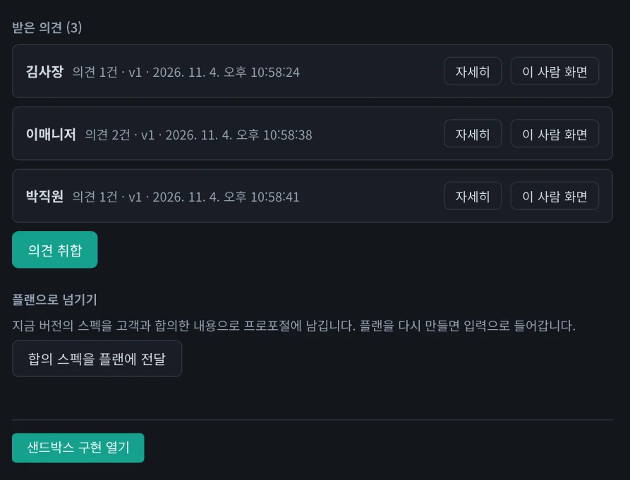
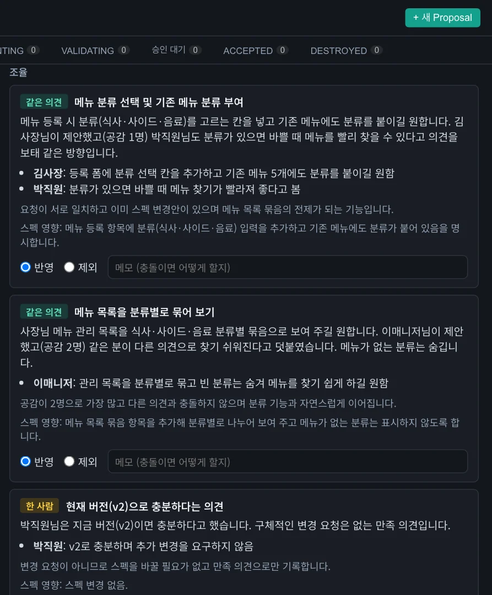
이 튜토리얼을 이어서 따라 하려면
6장부터는 5장의 Plan대로 구현합니다. 여기서 플랜 다시 만들기를 누르면 분류가 들어간 Plan이 생겨 6장 이후의 화면이 이 책과 조금 달라집니다. 이어서 따라 할 때는 누르지 않아도 됩니다. 합의 스펙을 플랜에 전달하는 것만으로는 Plan이 바뀌지 않습니다.
공유 범위와 안전#
기본 링크는 이 PC에서만 열립니다. 같은 네트워크에 공유를 켜면 고객 화면 전용 포트가 열립니다. 그 주소를 고객에게 전달합니다. 앱의 나머지 API는 그 포트로 열리지 않습니다. 인터넷을 통해 외부 고객에게 공유하려면 터널이나 배포가 따로 필요합니다.
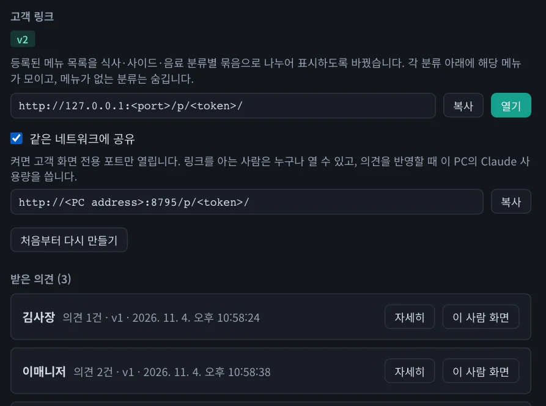
| 위험 | 막는 방법 |
|---|---|
| 고객의 글이 내 PC 의 모델로 들어온다 | 도구 · MCP · 개인 지침 없이 빈 폴더에서 호출. 사내 모델이면 도구를 넘기지 않음 |
| 프로토타입 코드는 믿을 수 없다 | 격리된 frame + 외부 통신 금지. 부모 페이지 · 저장소 · 네트워크에 닿지 않음. 고객이 공유한 화면도 같은 관문을 거침 |
| 다른 사람으로 글을 쓴다 | 브라우저의 비밀 키에서 서버가 ID 를 계산. 공개 ID 로는 쓸 수 없음 |
| 글에 넣은 코드 | 글자로만 보이고 실행되지 않음 |
| 내 계정 정보가 화면에 실린다 | 결과에서 계정 이메일 · 조직 이름 · 홈 경로를 지움 |
| 링크를 받은 사람이 무한정 부른다 | 바꿔 보기는 사람별 분당 6회 · 링크별 하루 300회, 말하기 · 좋아요는 분당 60회 |
남는 위험
로그인이 없습니다. 링크를 아는 사람은 누구나 열 수 있고, 창을 여러 개 열면 합의 표를 늘릴 수 있습니다. 피드백 창에서는 고객들이 서로의 이름과 글을 볼 수 있습니다. 글을 지우려면 처음부터 다시 만들어야 합니다. 로그인된 Claude Code는 계정 이메일을 모델에 넘깁니다. 결과에서 이메일을 지워도 모델이 글자를 나누거나 인코딩해 출력하면 막을 수 없습니다. 민감한 환경에서는 공유를 켜지 마세요.
사내 · 로컬 모델로 쓰기#
Claude Code 없이도 프로포절 스킬과 이 기능을 쓸 수 있습니다. 설정 › AI 모델에서 OpenAI 호환 모델을 고르고 주소, API 키, 모델 이름을 입력합니다. 연결 시험을 누르면 세 가지 기능을 실제로 호출해 봅니다.
| 시험 항목 | 쓰이는 곳 |
|---|---|
| 답하기 | 이 장의 MVP, AI 기능 |
| 도구 호출 | 프로포절 스킬. 못 내는 모델은 없는 파일을 지어낼 수 있어 쓰면 안 됩니다 |
| Anthropic 형식 | 코드 셀. 켜면 코드 셀과 나머지 Claude Code 호출도 게이트웨이로 갑니다 |
추론 수준은 「낮음」을 권합니다. 추론이 긴 모델은 추론에 토큰을 다 써서 본문이 비거나 시간이 아주 오래 걸립니다. 아래는 회사 게이트웨이 모델로 측정한 값입니다. 프로포절이 서로 달라 직접 비교한 결과는 아닙니다.
| 단계 | 추론 설정 없음 | 낮음 |
|---|---|---|
| Intent | 39초 | 29초 |
| Plan | 1131초 | 83초 |
| 작업 목록 | 349초 | 25초 |
확인 문제#
- 김사장이 화면을 바꾸면 이매니저의 화면도 바뀌나요?
- 혼자서 「모두의 버전으로 제안」을 누르고 좋아요를 누르면 새 버전이 되나요?
- 「나만 보기」로 바꾼 화면을 설계자가 볼 수 있나요?
- 합의된 v2에서 등록 칸의 「분류」를 누가 넣었는지 어떻게 알 수 있나요?
- 피드백 창을 접어 둔 사이 새 글이 올라왔는지 어떻게 알 수 있나요?
정답
- 바뀌지 않습니다. 피드백 창에 카드가 올라오고, 이매니저가 화면 보기로 열어 볼 수 있습니다. 바꾸고 싶으면 여기서 이어가기로 그 화면에서 이어서 고칩니다.
- 되지 않습니다. 참여자 과반, 최소 2명의 좋아요가 있어야 합니다.
- 볼 수 없습니다. 공유하기 전까지는 그 사람의 브라우저에만 있습니다.
- 등록 칸에 붙은 메모에 이름과 의견이 보입니다. 메모를 누르면 피드백 창의 해당 글로 이동합니다.
- 오른쪽 아래 로고 단추에 다른 사람이 쓴 새 글 수가 뜹니다.